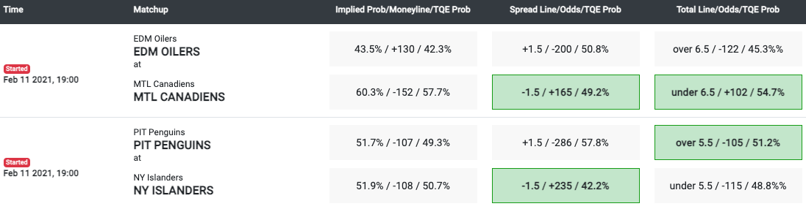

The Quant Edge
TQE makes it very easy for users to see our current picks and to understand what we suggest and what we believe the probability is that our picks will be correct. You just need to click into the tab called “Betting” in the home page and choose in which leagues you are betting. Take NBA for example. TQE Picks for today will be highlighted in green. TQE offers picks in Moneyline, Spread line, and Total line. Our estimated probability of each suggested event happening is also shown in percentage form.
Standard Picks/Bets:
Take a sample page from our website.
It is possible that TQE doesn’t show favor to either side of a bet. For example, TQE doesn’t make a choice in the Moneyline bet between the Clippers and Wizards. It is because the probability calculated by TQE is less than the implied probability needed for the bet to generate positive revenue. Based on the odds (i.e. +170, -210 as shown above, etc.) this single bet doesn’t give a positive payoff given the risk TQE calculates.
In several leagues like the NFL and NBA, the Spread lines for different games will vary, but the odds will generally just be the “vig” or “juice” that is generally set at -110. However, for the MLB and NHL, you have the option to bet the Moneyline or the standard Spread line at -1.5 or +1.5 between favorites and underdogs. The difference is instead expressed in their difference in odds. The odds are +165 at -1.5 for the Canadians below and -286 for the Penguins in the example provided below. The potential payout and risk associated with the game odds at -1.5/+1.5 vary to a much larger degree.
Player Impact Tools
One important innovation provided to TQE subscribers is the Player Impact Tools. TQE gives subscribers the opportunity to input their own opinion of players’ performance into betting decisions. These patent-pending tools allow subscribers to adjust the TQE game predictions based on an estimated performance of multiple players for each game. Users can make their own predictions on the performances of individual players by the three categories of poor, average, and great. Then the TQE predicted result will change accordingly. Therefore, TQE Player Impact Tools can create up to 4.8 million scenarios for an NFL game (14 players in total from 2 teams by 3 performance categories: 314 =4.8 million) and 3.5 billion scenarios for an NBA game (20 players in total from 2 teams by 3 performance categories: 320 = 3.5 billion). Take Kansas Chiefs v. San Francisco 49ers as an example. The users can easily change the performance level of players in different positions.
Suppose that you think Patrick Mahomes and Jimmy Garoppolo will both perform above expectations. Then you can adjust their performance levels separately, as shown below. You can also change other players’ performance levels according to your predictions. TQE will show different results based on your choices.
Pick results before and after the adjustment:

If you only do the above changes on Patrick Mahomes and Jimmy Garoppolo, TQE predicts that Spread will change from -5.8 to -9.1. Pick Probability tells you how much chance you will beat the Vegas Line if you make this pick. For example, in this case, if Patrick Mahomes and Jimmy Garoppolo are both performing well, and you pick Chiefs, there is a 73.7% chance that Chiefs will beat the Vegas Line at -1.5. The same applies to the calculation of Over/Under.
Let’s illustrate the concept of the expected return based on the vegas spread:
Take San Antonio Spurs v. Dallas Mavericks as an example.
Pick results before the adjustment:
TQE predicts the Spread will be +7.1. TQE picks Dallas Mavericks and the pick probability of beating the Spread at +4.5 will be 60.1%.
TQE predicts the Spread will be +7.1. TQE picks Dallas Mavericks and the pick probability of beating the Spread at +4.5 will be 60.1%.
The formula to calculate expected return:

In this case, the pick probability of winning the Spread is 60.1% and the TQE loss probability is (1-60.9%) = 39.1%. TQE suggests picking Mavericks.
Therefore, we can calculate the expected return of our pick of Spread. ER = (100 * 0.601 + (-109) * (0.399)) / (109) = 0.1524 ≈ 0.15
0.15 means that over time for every bet you make with the 0.15 expected return you will make or average out $15 in profit for every $100 you bet.
Now we can use the Player Impact tools and change DeMar DeRozan’s performance level to “Great” but keep others intact.
In this case, TQE expects that Spurs will instead win by 2.4 points (-2.4). If we pick Spurs, TQE expects that there will be a 60.9% chance to beat the Vegas Line at +4.5. Similarly, we can calculate the expected return if we choose the Spurs in this scenario.
TQE Historical Returns
Our high-confidence picks for Spread are at 47-26 (64.6%) and high-confidence picks for o/u are at 12-5 (65.6%), making a total of 59-31 (65.6%). If betting $100 on each TQE high-confidence picks all the NFL season, you would have won $2269. In the season of 2018-2019, TQE had a record of 66.7%. For the 2019-2020 season, the record was 57.9% including playoffs and 58.7% excluding play-offs.